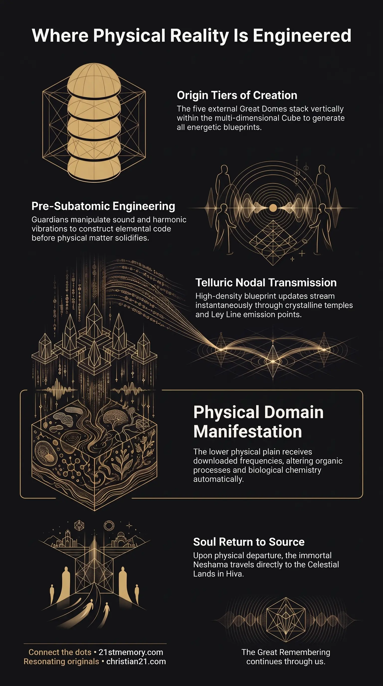

How External Domes Engineer Physical Reality
How External Domes Engineer Physical Reality — the five Great Domes engineer energetic blueprint schematics and download them into the physical plane.

How External Domes Engineer Physical Reality — the five Great Domes engineer energetic blueprint schematics and download them into the physical plane.

Immortal Light Within — the Neshama travels to the Celestial Lands within Hiva after the physical vessel ends.
The External Domes are five vast, sovereign structural enclosures that exist outside the physical plane of existence, each containing hundreds of distinct worlds and high-density environments. Identified individually as the Dome of Titans, Sheol, Silence, 5 Peaks, and Hiva—which is also designated as Terra Incognita and the Celestial Lands—these structures function as the primary origin domains for multi-dimensional creation. While geographically depicted as physically adjacent for illustrative simplicity, these five Great Domes actually stack vertically on top of one another inside the multi-dimensional Cube, operating across quadrillions of horizontal frequency bands.
Unlike the physical plane's Great Dome, which functions as a sealed Terrarium Seal enclosing physical landmasses and the shared Super-Ocean, the External Domes host higher-density light realms and semi-physical architectures. These external structures operate as the central administrative and generative hubs of creation, responsible for designing, testing, and manufacturing the energetic blueprint schematics for all physical matter before it materializes. Through an interconnected system of nodal Ley Line emission points and telluric currents, the External Domes maintain continuous, instantaneous data exchanges with the physical realm, ensuring that natural evolution and material updates are governed by high-density harmonic intent. Furthermore, the Celestial Lands within these external domains serve as the immediate transitional destination for the human soul, or Neshama, upon departing the physical vessel.
The primary revelation regarding the External Domes is their fundamental role as the generative engine and blueprint factory of all creation. Physical matter does not originate spontaneously within the material realm; rather, every physical component, biological process, and elemental variation is first conceived, engineered, and perfected within the External Domes. These five structures—the Dome of Titans, Sheol, Silence, 5 Peaks, and Hiva—contain hundreds of membrane worlds operating across diverse environmental states, including aquatic worlds without land, fire worlds, and pure frequency-based realms. Operating outside linear time, these external realms conduct quantum harmonic experiments where failure, waste, or delay are impossible, ensuring that perfect master schematics are developed instantaneously.
Another critical revelation concerns the structural arrangement of these external domains within the multi-dimensional Cube. Although external map representations present these Great Domes side by side for conceptual clarity, they are in truth vertically stacked on top of one another. Creation operates as a vast vertical stack of quadrillions of horizontal frequencies, descending from Source consciousness at the highest density down to the physical plane at the base. The External Domes occupy these elevated frequency tiers, allowing high-density beings and guardians to utilize the five fundamental elements—Earth, Air, Fire, Water, and Consciousness—to govern lower-density physical manifestations without needing dense physical bodies.
Additionally, the Celestial Lands within Hiva (Terra Incognita) reveal the true post-mortem trajectory of human consciousness. Upon the cessation of the 3rd-density physical vessel, the Neshama does not dissipate or enter an illusory void; it travels immediately across dimensional boundaries into the Celestial Lands. This establishes a direct, living connection between human spiritual architecture and the External Domes, emphasizing that human souls are native to these high-density external light realms and are merely visiting the inverted physical plane far below their point of origin.
Finally, a fundamental distinction exists between the function of the External Domes and the physical Great Dome. While the physical Great Dome acts as a protective Terrarium Seal over the physical plain, holding the shared Super-Ocean and regulating pressure via volcanoes, the External Domes remain unsealed generative spheres that project energetic code into physicality. The physical plane is essentially an automated manufacturing floor, whereas the External Domes represent the upper management and design engineering complex operating in higher harmonic frequencies.
The physical layout of the External Domes is anchored within the geometry of the supermassive Cube that encompasses all physical and non-physical creation. Within this Cube, quadrillions of horizontal frequency bands create distinct density layers. The five external Great Domes—Dome of Titans, Sheol, Silence, 5 Peaks, and Hiva—are stacked vertically alongside various light realms and semi-physical realms. Each External Dome encloses hundreds of individual worlds separated by thought and frequency rather than spatial distance. These worlds share underlying energetic infrastructure; for instance, their vast oceans are interconnected beneath ice boundaries, and deep planetary fluids like oil flow freely across realm boundaries under the ice walls as essential architectural lubricant.
Creation within the External Domes relies on advanced tonal harmonics and harmonic scaffolding rather than physical construction tools. High-density beings, including the Proximal Sols and Ancient souls, utilize standing waves and tonal vibrations to construct anchored light realm architecture, forming mountains, buildings, and terrain in semi-tangible vibratory states. When a physical requirement arises—such as generating a new plant enzyme like the F3'5'H enzyme or changing the biological attributes of a species—the process begins in the light realms of the External Domes. Specialized guardians manipulate the core frequencies of the five elements at a pre-subatomic level. By modulating vibration and sound before particles solidify into subatomic matter, the external realms construct the exact mathematical and chemical code required for the physical update.
The transmission of data between the External Domes and the physical plane occurs via an instantaneous nodal communication network. Every Great Dome, whether external or physical, features matching nodal Ley Line emission points topped with crystalline temples. When a physical guardian initiates a request from a crystalline temple on a physical Ley Line node, the intention is transmitted as telluric currents through the Aether. Because creation exists within a frequency-stacked Cube, spatial distance is irrelevant; nodal communication folds dimensional space, making data transfer instantaneous.
The guardians within the External Domes receive this telluric request and engineer the exact harmonic solution. Once perfected, the new programming code is transmitted back through telluric currents as a spiritual "download" to all nodes across the physical realm network. The physical planet then reacts to this newly received code, utilizing its natural organic technology to alter physical manifestations—such as adjusting soil chemistry, pH balances, and enzyme production—without requiring manual physical intervention.
The worlds enclosed within the five External Domes exhibit diverse elemental configurations designed for specialized generative functions:
Light Realms — Domains devoid of physical matter, consisting purely of sound, light, and harmonic resonance where blueprint schematics are generated.
Semi-Physical Realms — Hybrid environments combining light realm architecture with semi-tangible physical structures, serving as intermediate testing grounds.
Aquatic Worlds — Worlds comprised entirely of electrolyte fluids and oceanic brine, ideal for initiating new biological lifeforms and elemental combinations.
Fire Worlds — High-energy thermal environments utilized to forge elemental core vibrations and drive energetic transformations.
Frequency-Based Realms — Pure vibrational zones where consciousness directly ordains elemental interactions without physical friction.
The External Domes maintain direct operational interconnections with the physical plane's organic circuit board. The physical plane contains buried mineral traces, hydrothermal veins, and crystalline composite networks that act as a planetary motherboard. The nodal Ley Line emission points situated within the External Domes align precisely with the Ley Line grid and central spirit tree root systems of the physical plane. Aetheric energy flows continuously from the upper atmospheric Aether of the External Domes down through tree leaf antennas, entering physical soil and crystalline cave systems to complete a unified multidimensional circuit.
Furthermore, the External Domes share continuous data loops through the telluric current network. Natural phenomena on the physical plane—such as rivers, streams, and waterfalls—function as literal data streams when viewed from the higher densities of the External Domes. This interconnectivity ensures that any environmental request or conscious intent generated within the physical plane is immediately processed by the high-density guardians in the External Domes, maintaining universal harmony across all 14,000+ individual civilizations within the broader system.
Understanding the function and structure of the External Domes yields profound strategic insights into the nature of material reality and human potential:
Primacy of Blueprint Creation over Physical Manipulation: Physical reality cannot be genuinely transformed through mechanical or chemical force alone; true material alteration requires accessing the high-density blueprint schematics generated within the External Domes via harmonic frequency and conscious intent.
Reversal of Post-Mortem Existential Fear: Recognizing that the Neshama travels directly to the Celestial Lands within Hiva / Terra Incognita immediately after physical death eliminates existential terror, revealing physical incarnation as a temporary excursion into lower-density terrain.
Restoration of Natural Nodal Technology: The reliance of physical creation on downloads from the External Domes highlights the catastrophic impact of industrial mining. Extracting essential metals like copper disables the planetary motherboard's receiving nodes, severing humanity's ability to receive instant energetic updates and high-density portal capabilities from the External Domes.
Mastery of Consciousness as the 5th Element: Realizing that the External Domes operate through the unification of Earth, Air, Fire, Water, and Consciousness empowers individual soul light to transcend physical limitations, restoring innate portal travel, telepathic manifestation, and direct communion with higher-density light realms.
This topic is free to share. Support the archive →